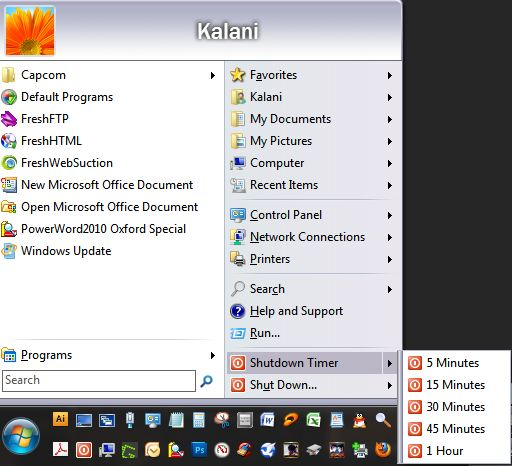
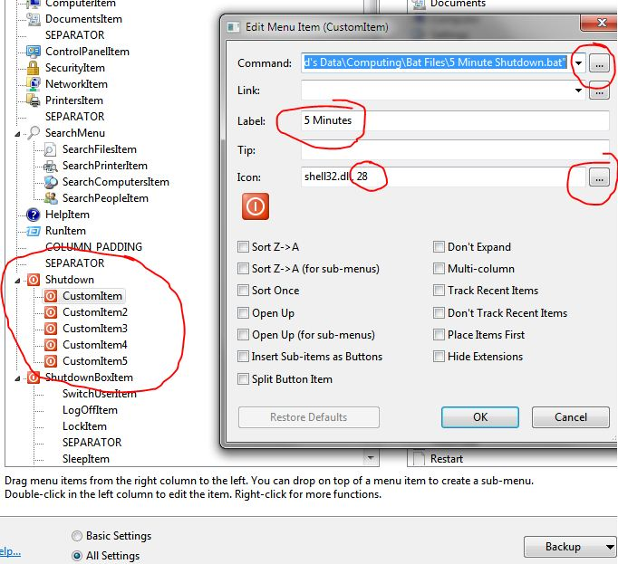

Joined: Thu Feb 21, 2013 11:04 pm
Posts: 463
|
 Here is how to created the above Shutdown Timer Menu for the Classic Shell Start Menu: (I do this mostly because I like to listen to music as I leave the house or fall asleep..) **UPDATED to include GauravK's implementation of Shellexecute.exe, added to create Method 1.. Method 2 is without ShellExecute.exe, and linking to BAT files instead ******************************************************************* ***Method 1:***Step 1, Install Shellexecute.exe : Step 2, Set Up the New Menu:- Right Click the Start button, click "Settings"
- Click "All Settings" at the bottom
- Click the "Customize Start Menu" Tab
- In the Left column, under "Current Menu Items", scroll down to "ShutdownBoxItem"
- Click on the Item "SEPARATOR", just above "ShutdownBoxItem"
- In the Right Column, under "Available Commands", scroll to the bottom & double-click "Custom Command"
- It should appear between "SEPARATOR" and "ShutdownBoxItem"
- Right-Click the new Item, & Select "Edit Item"
- in the "Command" box, type "shutdown_box"
- in the "Label" box, type "Shutdown Timer"
- in the "Icon" Box, click the "..." to the right
- Browse to Icon #28, or any icon you have or want
- Click on the "Split Button Item" checkbox
- Click OK
- Now Click on the new Item you created, it should say "Shutdown"
- in the Right Column, double-click "Custom Command" 5 times
- all the commands should be in a sub-menu under the first one you created, if they arent, just drag them there
- You should see:
- CustomItem
- CustomItem2
- CustomItem3
- CustomItem4
- CustomItem5
- Right-Click "CustomItem", and select "Rename" and give them a name without spaces, like:
- 5MinuteShutdown
- 15MinuteShutdown
- 30MinuteShutdown
- 45MinuteShutdown
- 60MinuteShutdown
(You can also use these to replace the Shutdown Submenu, so that they are each buttons themselves, just drag them out of the sub-menu and place them on the same level as the Shutdown button) Step 3, Input Commands:- Right Click the first CustomItem (5MinuteShutdown), and select "Edit Item"
- in the "Command" box, type: shellexecute /F:shutdown.exe /P:-s -t 300 /R:hidden
- in the "Label" box, type "5 Minutes"
- in the "Icon" Box, click the "..." to the right
- Browse to Icon #28, or any icon you have or want
- Repeat with all the other CustomItems (15MinuteShutdown, etc), except with the following changes:
- for 15MinuteShutdown:
- in the "Command" box, type: shellexecute /F:shutdown.exe /P:-s -t 900 /R:hidden
- in the "Label" box, type "15 Minutes"
- for 30MinuteShutdown:
- in the "Command" box, type: shellexecute /F:shutdown.exe /P:-s -t 1800 /R:hidden
- in the "Label" box, type "30 Minutes"
- for 45MinuteShutdown:
- in the "Command" box, type: shellexecute /F:shutdown.exe /P:-s -t 2700 /R:hidden
- in the "Label" box, type "45 Minutes"
- for 60MinuteShutdown:
- in the "Command" box, type: shellexecute /F:shutdown.exe /P:-s -t 3600 /R:hidden
- in the "Label" box, type "60 Minutes" or "1 Hour"
- Click OK to close each of them as you finish them
- Click OK again to close the Settings window
- Done!
******************************************************************* ***Method 2***(Without ShellExecute.exe installed - for linking to bat files - but Method 1 is the Preferred Method since no command window will flash up & disappear)
Step 1, Create Bat Files: - Create the Bat Files:
- Go to the folder on your computer you save all of your .Bat files
- Right-click an empty space, and click New>Text Document
- Name it "5 Minute Shutdown.bat"
- Right Click it and select Edit
- Paste the following text: c:\windows\system32\shutdown -s -f -t 300
- Click Save & Close it
- Right-click it, select Copy
- Hit Ctrl+V 4 times
- Rename them all to:
- "15 Minute Shutdown.bat"
- "30 Minute Shutdown.bat"
- "45 Minute Shutdown.bat"
- "60 Minute Shutdown.bat"
- Right-click them one by one, and paste the following:
- for 15 minutes, paste: c:\windows\system32\shutdown -s -f -t 900
- for 30 minutes, paste c:\windows\system32\shutdown -s -f -t 1800
- for 45 minutes, paste c:\windows\system32\shutdown -s -f -t 2700
- for 60 minutes, paste c:\windows\system32\shutdown -s -f -t 3600
- (-s=shutdown, -f=force shutdown, -t=time)
- Save them all & Close them
Step 2, Set Up the New Menu:
- Follow the Same Procedures Detailed in "Step 2" above, in Method 1
Step 3, Input Commands:- Right Click the first CustomItem (5MinuteShutdown), and select "Edit Item"
- in the "Command" box, click the "..." to the right, and browse to your "5 Minute Shutdown.bat" file
- in the "Label" box, type "5 Minutes"
- in the "Icon" Box, click the "..." to the right
- Browse to Icon #28, or any icon you have or want
- Repeat with all the other CustomItems (15MinuteShutdown, etc), except with the following changes:
- for 15MinuteShutdown:
- in the "Command" box, browse to your "15 Minute Shutdown.bat" file
- in the "Label" box, type "15 Minutes"
- for 30MinuteShutdown:
- in the "Command" box, browse to your "30 Minute Shutdown.bat" file
- in the "Label" box, type "30 Minutes"
- for 45MinuteShutdown:
- in the "Command" box, browse to your "45 Minute Shutdown.bat" file
- in the "Label" box, type "45 Minutes"
- for 60MinuteShutdown:
- in the "Command" box, browse to your "60 Minute Shutdown.bat" file
- in the "Label" box, type "60 Minutes" or "1 Hour"
- Click OK to close each of them as you finish them
- Click OK again to close the Settings window
- Done!
******************************************************************* Here is what it should look like, except "CustomItem's" should be your Names without Spaces, i was lazy: 
Last edited by Tenzen on Wed Mar 20, 2013 8:49 pm, edited 11 times in total.
|
|